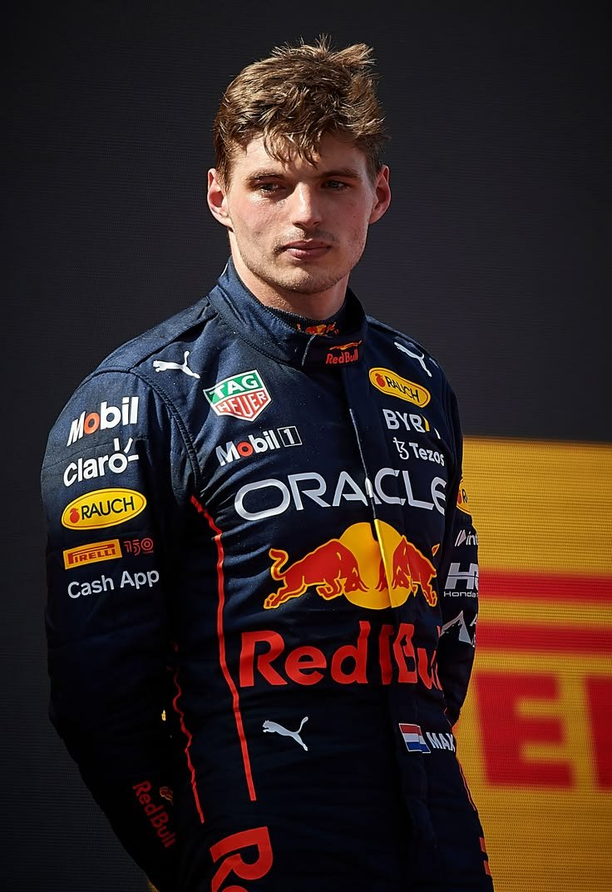

Max Verstappen standing on the podium, celebrating a hard-fought Grand Prix victory.
About His Career
Max Verstappen is a Dutch racing driver who reshaped the landscape of modern Formula 1. Competing under the Dutch flag with Red Bull Racing, he entered the sport as its youngest-ever competitor. Known for his aggressive overtaking, flawless race pace, and wet-weather mastery, he quickly evolved from a prodigy into a multi-time World Champion.
Key Accomplishments
- 2015: Made his Formula 1 debut at just 17 years old, becoming the youngest driver in the history of the sport.
- 2016: Won the Spanish Grand Prix on his Red Bull Racing debut, becoming the youngest-ever F1 race winner.
- 2021: Secured his maiden Formula 1 World Championship after an intense, season-long battle.
- 2022 - 2023: Dominating seasons resulting in consecutive World Championships, shattering records for most wins in a single season.